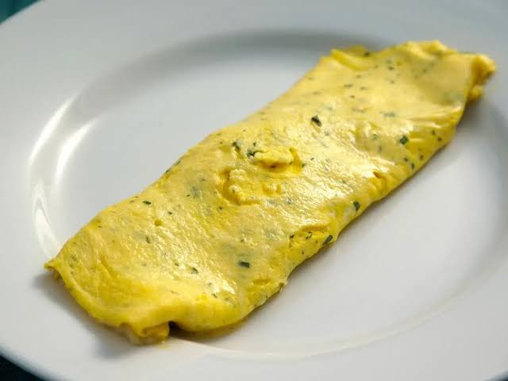

Unlike a diner-style American omelette, which is deeply browned and folded in half over heavy fillings, a French omelette is an elegant, pale-yellow cylinder. It features a completely smooth, un-browned exterior with a soft, creamy, custard-like center (called the baveuse). It is cooked incredibly fast over medium heat while constantly agitating the pan to keep the egg curds microscopic and delicate.
Crack 2-3 eggs into a bowl with a pinch of salt and pepper. Whisk vigorously with a fork until the whites and yolks are completely uniform and no clear streaks remain.
Melt 1 tbsp butter in an 8-inch non-stick skillet over medium heat until it foams but doesn't brown. Pour in the eggs and immediately begin shaking the pan back and forth while stirring the eggs rapidly with a rubber spatula.
As soft curds form, keep stirring and shaking for about 1 to 2 minutes. When the eggs look like wet, creamy scrambled eggs but can still hold their shape, stop stirring. Use the spatula to smooth the egg into an even layer across the pan.
Remove from heat. Tilt the pan and use your spatula to roll the egg sheet up tightly into a log or cylinder. Invert the pan directly over a plate so the omelette lands seam-side down. Rub a little extra butter on top for a glossy finish.